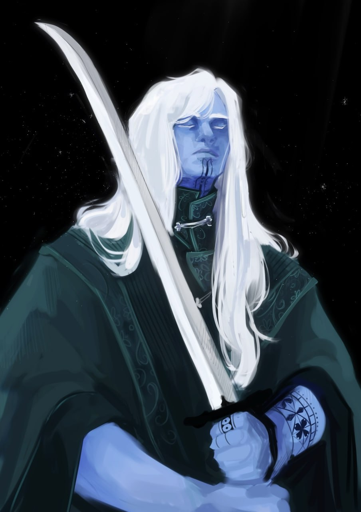

Однако эти славные дни закончились с приходом Имперцев. Придя в Померанию с юга, люди построили свои замки и установили свои порядки. Альбани нашли себя в новом для них мире — мире, где не они устанавливают порядки. Они оказались перед выбором: смириться либо остаться за бортом истории.
Коисморы — с имперского «Снежные Люди» — это жители центральной Померании, которые в большинстве своём приняли традиции и обычаи Людей (Померанцев) и живут своими кланами в городах по всему побережью Ледяного моря.
Они выглядят как высокие антропоморфные (гуманоидные существа), имеющие голубоватый оттенок кожи с узорами на всём теле преимущественно чёрного цвета. Их волосы белого или светло-серого оттенка. Черты лица со множеством острых линий и угловатостей.
Альбаны столь давно населяют побережье Ледяного моря, что приспособились к его суровому климату. Их тела способны долгое время переносить холод. Это выражено и в их культуре: их одежда более открыта и свободна, чем у людей. Мужчины часто носят килты и плащи, закрывающие плечи и торс.
Их культура построена на поклонении предкам. Каждый Альбани уважает старших, ведь они на протяжении всей жизни собирают и делятся опытом с более младшими соплеменниками. После прихода людей в Померанию Альбани приняли религию «5 богов», однако сохранили многие свои традиции. В основном они связаны с почтением к почившим предкам. К примеру, Альбани не хоронят своих умерших предков, а Кродируют (ритуальное сжигание почивших) их на костре-кроде (спец. лодка), тем самым выпуская душу из заточения почившего тела.
Альбани разделяют несколько общих особенностей.
| Особенность | Описание |
|---|---|
| Увеличение характеристик | Значение вашей Мудрости увеличится на 1, а значение любой характеристики на ваш выбор увеличится на 1. |
| Возраст | Альбани становятся взрослыми в районе 21 года и доживают до 80 лет. |
| Размер | В среднем Альбани вырастают от 175 до 210 см. Ваш размер — Средний. |
| Скорость | Ваша базовая скорость — 30 футов. |
| Приспособленные к холоду | Вы адаптированы к холодным климатическим условиям и имеете сопротивление урону холодом. |
| Выброс льда | Начиная с 3-го уровня, вы можете накладывать заклинание ледяные пальцы как заклинание 1-го уровня с помощью этой особенности. После накладывания этого заклинания с помощью особенности вы должны закончить продолжительный отдых, прежде чем сможете вновь наложить его таким образом. Кроме того, вы знаете заговор Леденящее прикосновение [Chill touch]. Базовой характеристикой для этих заклинаний является Мудрость. |
| Неустанная скрупулёзность | Связь вашего разума и окружающего мира укрепляет вашу волю. Вы совершаете с преимуществом спасброски Мудрости. |
{kind=link}